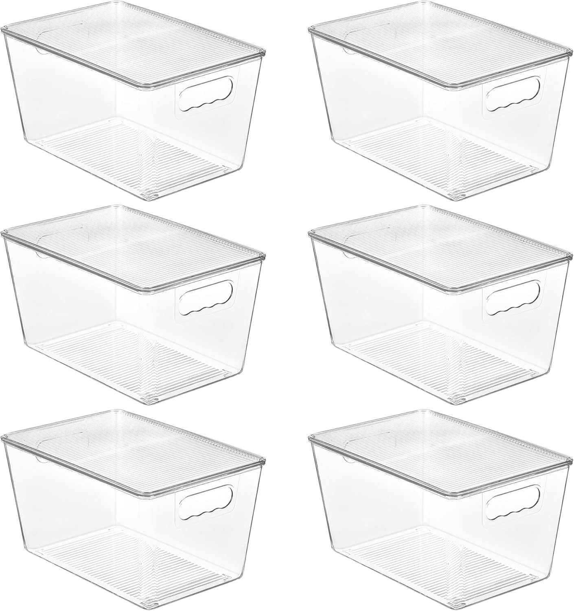
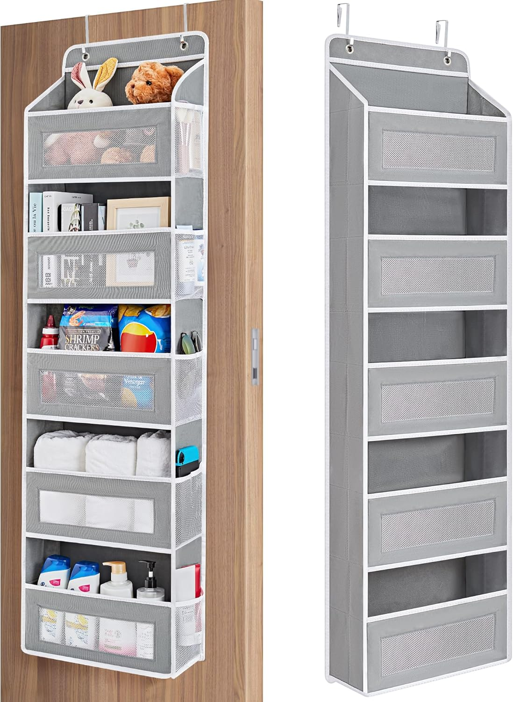
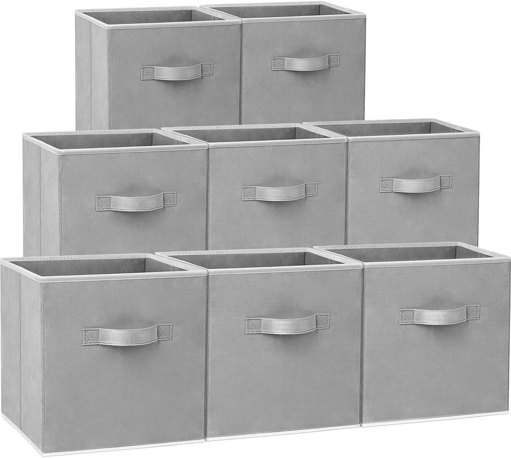
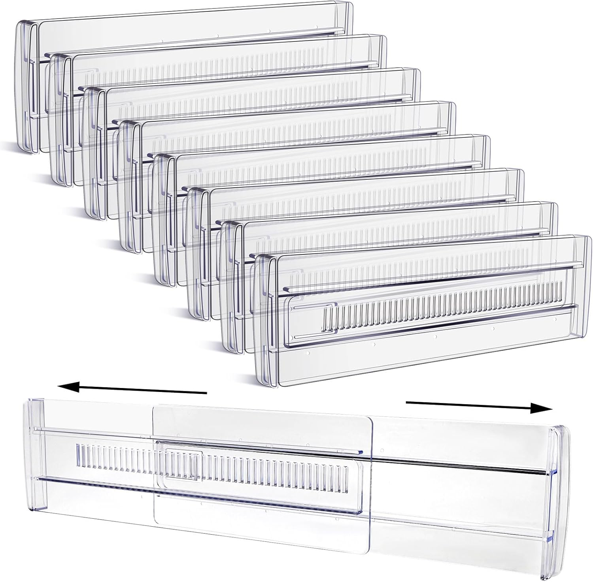
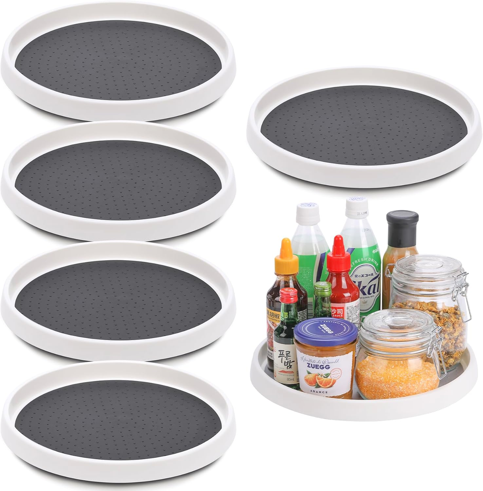
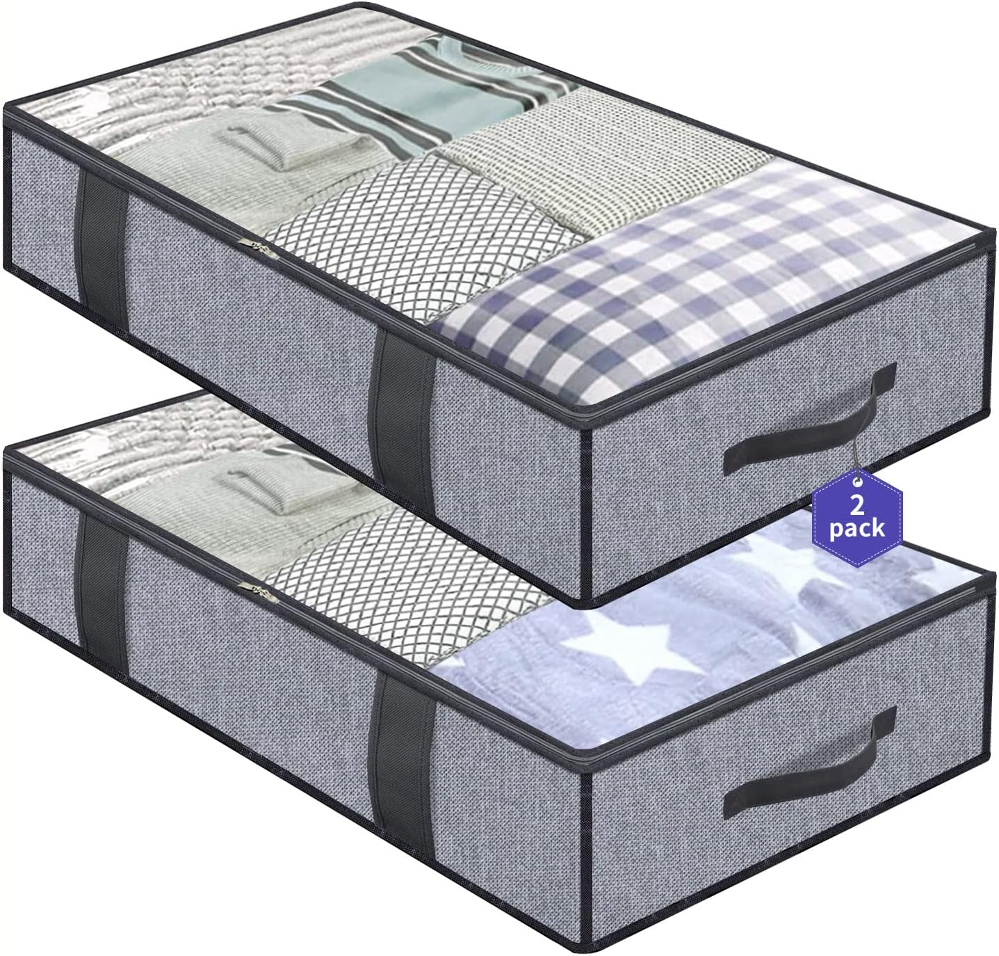
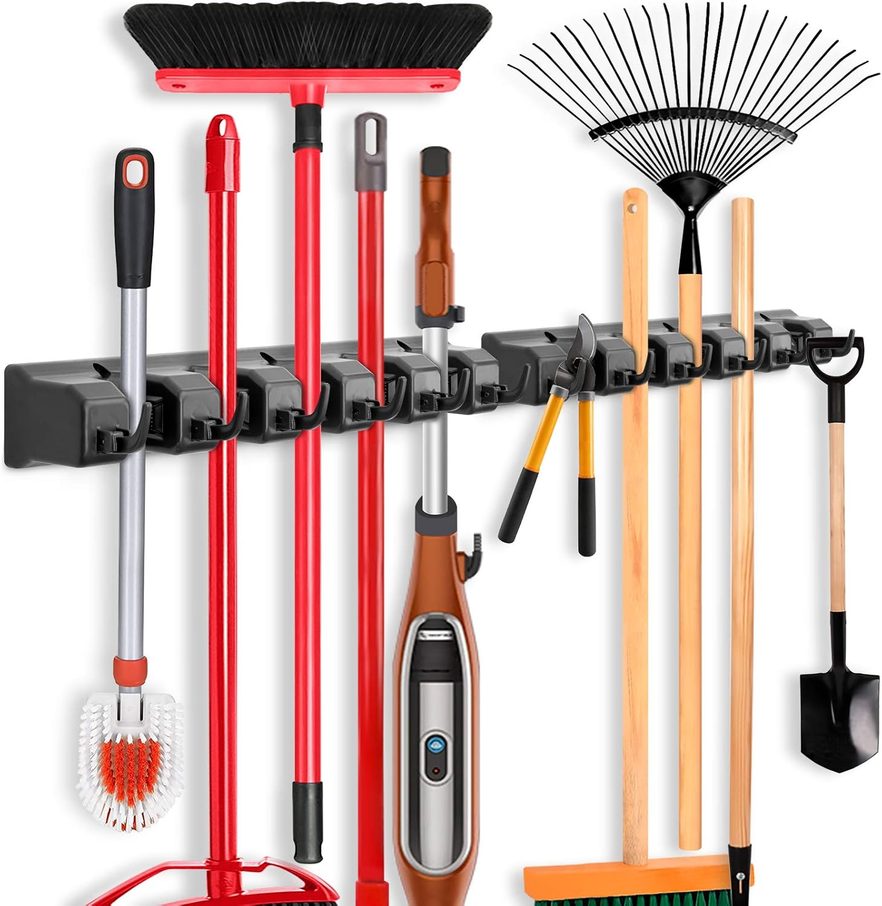
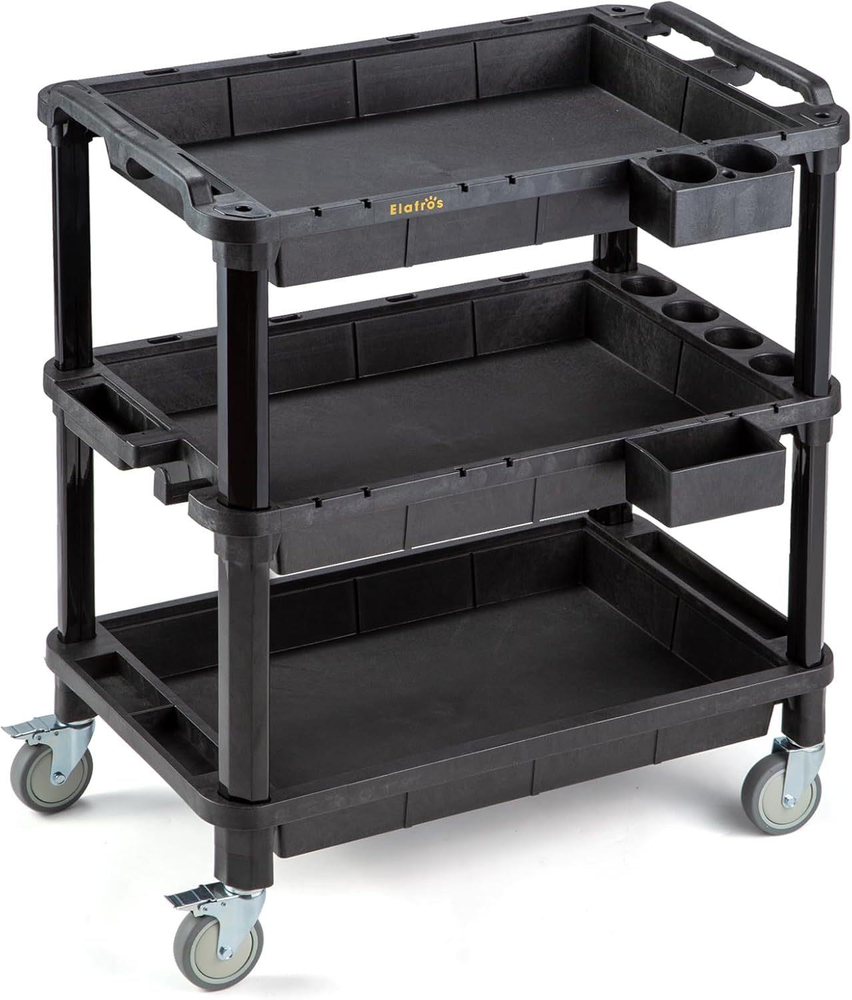
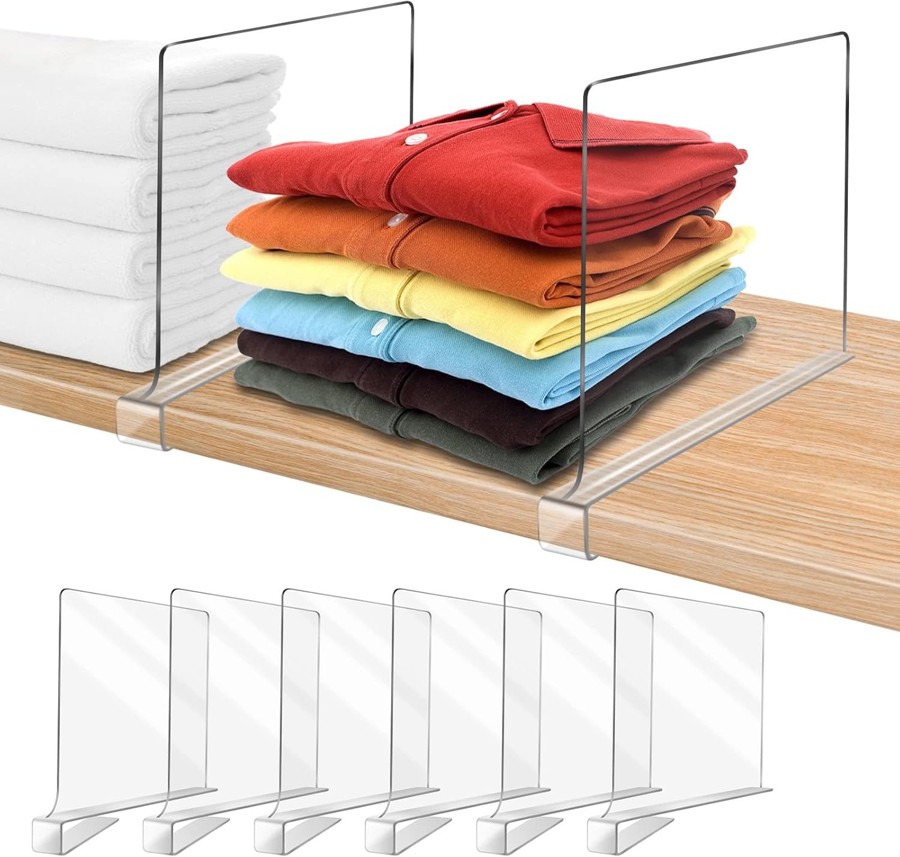
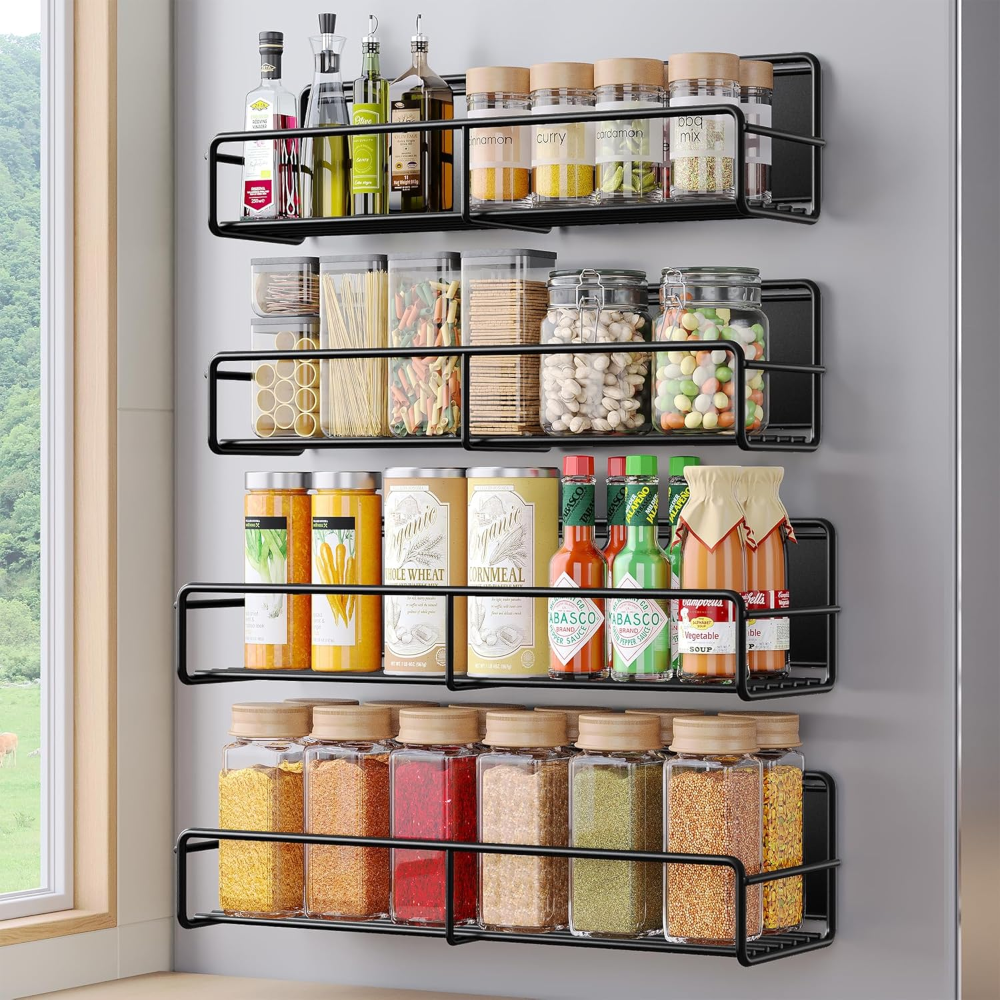

Top 10 Amazon Home Storage Organization Products That Actually Work

Published on July 7, 2025 · 5 min read
Is your home feeling cluttered no matter how much you clean? You're not alone. I found 10 affordable and stylish home organization products from Amazon that helped me transform messy spaces into calm, organized corners — and they actually look good doing it!
1. Clear Stackable Storage Bins
Clear, stackable storage bins with removable dividers and optional wheels make it easy to organize anything from snacks and small containers to packages and inventory. Great for pantries, bathrooms, or under sinks, they fit well on tall shelves, help save space, and keep everything visible and easy to reach.
2. Over-the-Door Hanging Organizer
Make the most of vertical space with this over-the-door organizer. Perfect for shoes, toiletries, toys, and cleaning supplies—no tools needed.
3. Foldable Storage Cubes
Soft yet sturdy foldable cubes fit shelving units or work standalone. Ideal for clothes, books, toys, or displaying plants and decor. Fold flat when not in use.
4. Drawer Dividers
Adjustable dividers create separate sections for utensils, cosmetics, or clothing. Easy to install and keeps drawers tidy.
5. Lazy Susan Turntable
Rotating tray to access hard-to-reach items in cabinets or corners. Ideal for spices, sauces, or baking supplies.
6. Under Bed Storage Bags
Zip-up bags slide under the bed to store seasonal items, shoes, or extra blankets while protecting them from dust.
7. Wall-Mounted Mop & Broom Holder
Keep cleaning tools organized and off the floor. Perfect for laundry rooms, garages, or utility closets.
8. Multi-Use Utility Cart
Three shelves and locking wheels make this cart ideal for kitchen, bathroom, or office storage. Move items easily while staying organized.
9. Closet Shelf Dividers
Keep shelves neat with clear dividers for towels, sheets, clothes, or handbags. Creates tidy, functional spaces in closets.
10. Magnetic Spice Rack
Sticks to metal surfaces to store spices or small items, freeing up counter and cabinet space. Compact and versatile.
Organization doesn’t have to be boring or expensive. These Amazon products helped me take back control of my space — and they might do the same for you!
Note: These are non-affiliate links — I do not earn a commission if you buy through them.